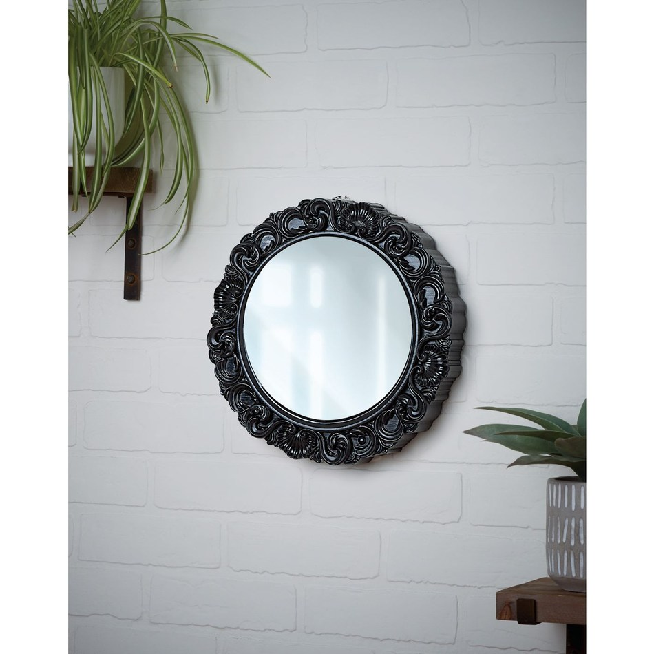

01 / THE MIRROR
Your reflection has other plans.
A mirror is supposed to copy you. Ghostly hands appearing in the glass make that familiar object feel immediately wrong. A small piece with an excellent sense of timing.
Ghost Hand Lenticular Mirror
12-inch indoor prop · motion activated · four AA batteries included
BEFORE YOU BRING IT HOME
Shop the mirrorOnline shipping listed in stock. Check local pickup and delivery for your address.
At Spirit Halloween · opens the exact product listing